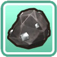
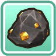
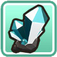
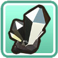
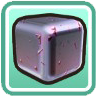
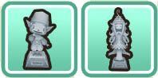
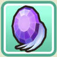

Mina de la cascada


Se puede acceder a la mina de la cascada durante todo el año, detrás de las humeantes aguas termales y el estanque de la diosa de la cosecha. La mayoría de los artículos ubicados dentro de la mina no se venden por mucho dinero. Los minerales que se encuentran dentro de las rocas se utilizan para mejorar herramientas o fabricar accesorios en la forja de Saibara.
| Objetos | Precio de venta | Niveles de mina |
|---|---|---|
 Hierba negra | 10 G | Todos los niveles |
 Restos de mineral | 1 G | Todos los niveles |
Cobre | 15 G | Todos los niveles |
 Plata | 20 G | Del nivel 3 al 255 |
 Oro | 25 G | Del nivel 6 al 255 |
 Mitrilo | 40 G | Del nivel 9 al 255 |
 Oricalco | 50 G | Del nivel 10 al 255 |
 Adamantita | 50 G | Del nivel 10 al 255 |
 Mineral legendario | 20.000 G | Niveles 60, 102, 123, 152, 155, 171, 190, 202, 222 y del nivel 231 al 255. |
El Mineral legendario solo aparece en las rocas dentro de la mina después de haber recolectado las 6 herramientas malditas de la mina del lago y haber eliminado la maldición de cada herramienta para convertirlas en herramientas de nivel bendito. Estas piedras luego se pueden usar para remodelar sus herramientas de mithril a sus formas de herramientas míticas. Algunos jugadores han notado que les resulta más fácil ubicar el mineral legendario en los pisos designados después de encontrar la Joya de la Diosa de los pisos, ya que es un elemento menos posible que podría aparecer en los pisos de mineral designados. Se puede encontrar más de un mineral mítico en el mismo nivel, aunque es poco común porque el mineral en sí puede ser bastante raro. Algunos jugadores lo intentarán una y otra vez y no obtendrán nada, mientras que otros no tendrán problemas para localizar el mineral legendario.
Otros elementos de la mina de la cascada
Hay algunas cosas especiales y objetos que puedes conseguir en esta mina y una vez conseguido no volveran aparecer, dichos objetos son:
| Niveles de peligro |
No todos los niveles de la mina contienen trampas. A veces tendrás que cavar para encontrar la escalera que te lleve al siguiente nivel. Aparecen trampas en:
No puedes caer hasta el nivel 255, pero si encuentras un obstáculo en el nivel 248, puedes caer hasta el nivel 253 (caída máxima de 5 niveles). |
|---|---|
| Balla de poder |
 Puedes encontrar una de estas frutas que aumentan la resistencia en el suelo en el nivel 100. |
| Estatuas |
 Hay dos estatuas decorativas para el estante de trofeos de tu granja que están escondidas en el suelo de Spring Mine. Cada estatua sólo se puede descubrir una vez:
|
| Joyas de la Diosa |
Las 9 joyas están ubicados en las rocas de los niveles 60, 102, 123, 152, 155, 171, 190, 202 y 222, ademas el mineral legendario y las joyas de la diosa aparecen en los mismos niveles. |
| Piedra Tomatosetta |

En el nivel 255, usa tu azada en el piso de tierra para ubicar la Piedra Tomatosetta. En la tablilla de piedra está escrita la receta de cocina del ketchup. Luego puedes guardar la Piedra Tomatosetta en el gabinete de tu granja o vendérsela a Huang por entre 68 000 G y 77 000 G. |
| Piedra de viaje |

|